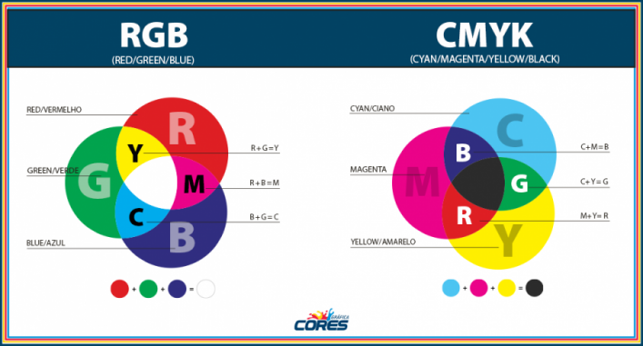
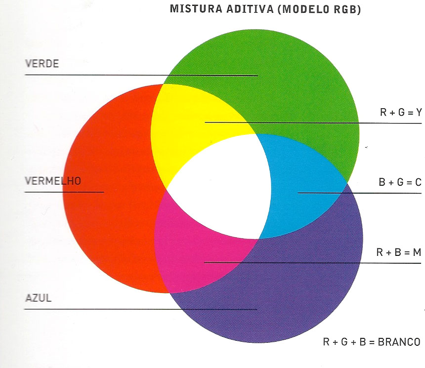
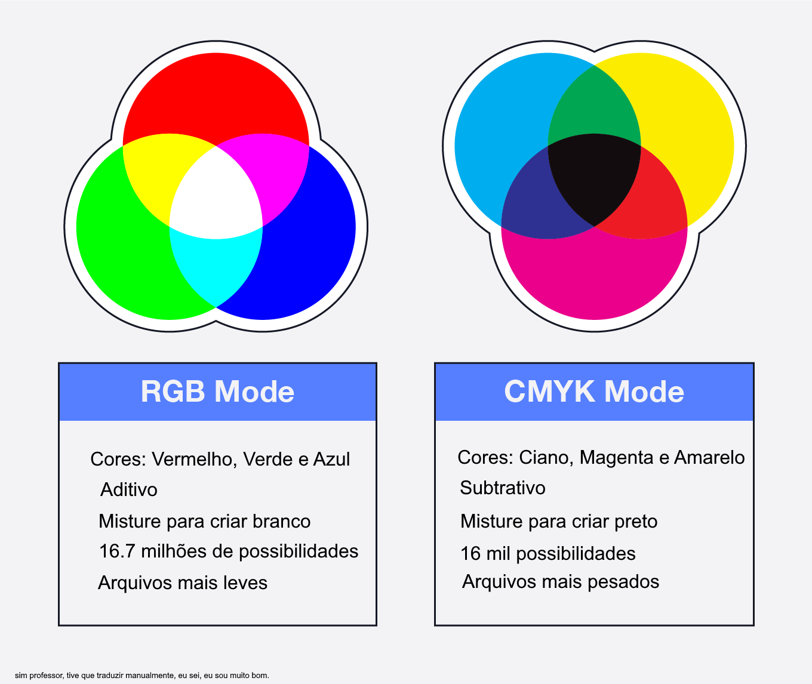

Contexto
Imagine isso: Você enviou seu material de marketing para a gráfica, mas eles responderam que as cores da impressão ficarão bem diferentes do que você esperava.
Isso acontece porque a impressora usa um sistema de cores diferente.
A gráfica explicou que o arquivo original precisa ser convertido do formato RGB para CMYK para que as cores saiam corretamente na impressão.
Mas afinal, oque é RGB e CMYK?
O modelo aditivo RGB
O RGB é um modelo aditivo de cores que é um sistema baseado na emissão de luz, onde as cores são formadas pela combinação de três cores primárias: vermelho (Red - R), verde (Green - G) e azul (Blue - B). Esse modelo é utilizado em dispositivos emissores de luz, como telas de computadores, televisores e projetores.
Combinação de Cores no Modelo Aditivo
Cada pixel em uma tela digital não é uma única unidade de cor, mas sim um conjunto de três subpixels menores, onde podem representar vermelho, verde ou azul (RGB).
Esses subpixels emitem luz de diferentes intensidades e, quando combinados, formam a cor percebida pelo olho humano. Como os subpixels são muito pequenos e ficam próximos uns dos outros,
o cérebro "traduz" eles como uma única cor.
Observe o exemplo:
0 significa que o subpixel está completamente apagado (sem luz).
255 significa que o subpixel está em sua máxima intensidade (luz total).
Modelo Subtrativo de Cores (CMYK)
O modelo subtrativo é utilizado em impressões e baseia-se na absorção de luz pelos pigmentos, ao contrário do modelo aditivo (RGB), que trabalha com a emissão de luz. Nesse modelo, as cores são formadas pela subtração de comprimentos de onda da luz branca, deixando apenas a cor refletida visível.
Mistura dos Pigmentos
As três cores primárias do modelo subtrativo são:
Ciano (C)
Magenta (M)
Amarelo (Y)
Quando combinadas, elas formam novas cores:
Porém, atente-se a um detalhe: na prática, a mistura de 100% dos três pigmentos não resulta em um preto puro, mas sim em um tom escuro acinzentado.
Para corrigir essa limitação e melhorar a qualidade da impressão, adiciona-se a cor preta (K, também conhecida como "key") ao modelo CMYK.
Com essa "key", é possível criar cores mais escuras. O K no modelo CMYK, ajuda a obter um maior contraste, economizar tinta, e ajuda na hora de imprimir sombras e profundidade. Por isso, em impressoras e gráficas, o CMYK é utilizado para garantir impressões que façam jus a sua qualidade original, e fique o mais próximo do desejado.
Observe a diferença entre impressões com os diferentes modelos.
Ultimato: Qual a diferença?
Os modelos RGB (aditivo) e CMYK (subtrativo) são sistemas de cores usados em diferentes contextos, cada um feito para um objetivo especifico.
O modelo RGB é usado em dispositivos emissores de luz, como telas de computadores, televisões e celulares. Ele funciona somando valores para representar uma cor.
O modelo CMYK é utilizado em impressoras e se baseia na absorção da luz refletida no papel, onde a mistura dos três pigmentos coloridos absorve luz e deveria formar preto,
mas na prática gera um tom escuro acinzentado. Por isso, adiciona-se o preto (K) para obter contraste e economia de tinta.
Em resumo, RGB adiciona luz para formar cores, enquanto CMYK subtrai luz ao misturar pigmentos.